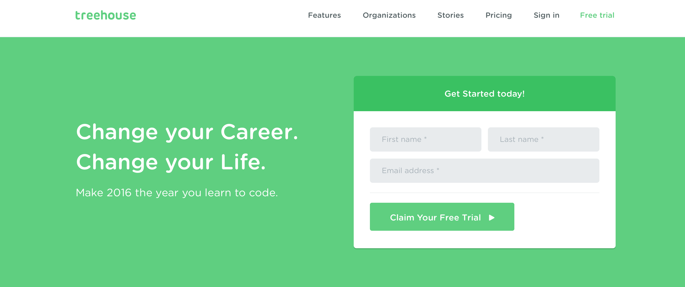
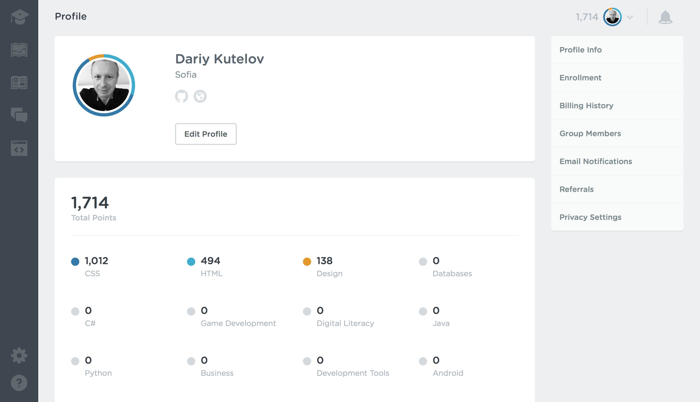

Hello, I’m Dariy.
My home is Sofia, Bulgaria.
My home is Sofia, Bulgaria.
I have very limited experience in front end development with some very basic knowledge and skills in HTML and CSS.
I was searching on Google to find web sites that offer online training for programming. This is how I found:
Due to time limitation so far I have completed only some CSS modules and even less HTML modules as seen in my profile:
I hope as said above I will "Make 2016 the year you learn to code". Although for the time being I do not actually need to change my carrier. I would like achieve first class level of front end web development skills to develop my online projects.